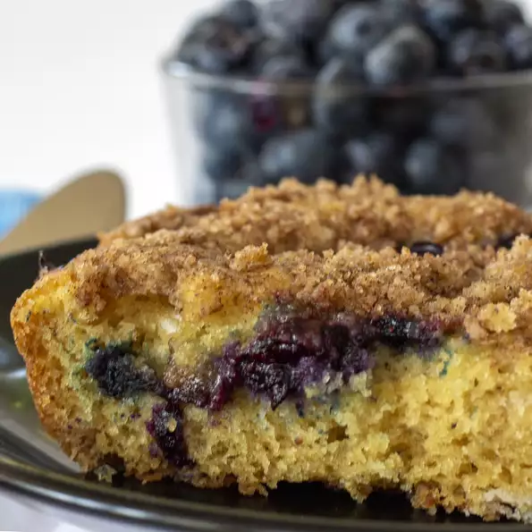

Blueberry cake

A simple coffee cake studded with blueberries and topped with a crunchy pecan streusel.
Per Serving: 491 calories; protein 38g; carbohydrates 39.7g; fat 20.3g; cholesterol 126.4mg; sodium 936.6mg.
- 10 ounces lasagna noodles
- 3 cups cottage cheese
- 2 eggs
- 1 teaspoon garlic powder
- salt and pepper to taste
Steps
- Preheat oven to 375 degrees F (190 degrees C).
- Bring a large pot of lightly salted water to a boil. Add lasagna noodles and cook for 8 to 10 minutes or until al dente; drain.
- In a skillet, brown ground beef. Using a fork, mix cottage cheese, eggs, garlic powder, parsley, salt and pepper. In a separate bowl combine tomato paste and tomato sauce.
- In a 9x13 inch baking pan, layer noodles, ground beef, tomato sauce mixture and cottage cheese mixture. Two layers of each will fit. Cover with tin foil and bake for 30 minutes. Remove tin foil the last 8 minutes of baking time.